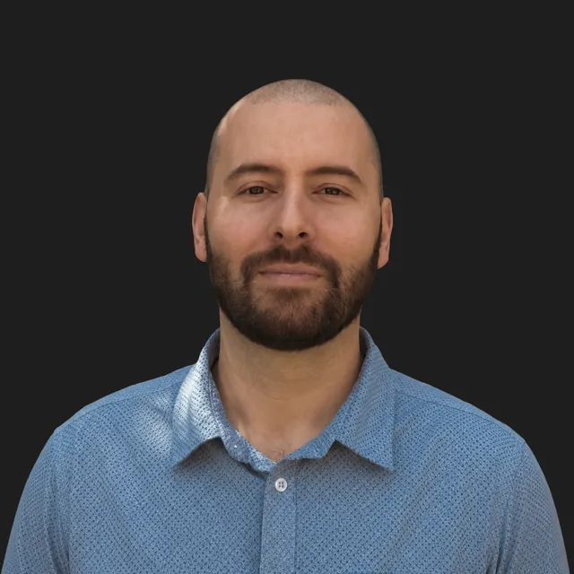
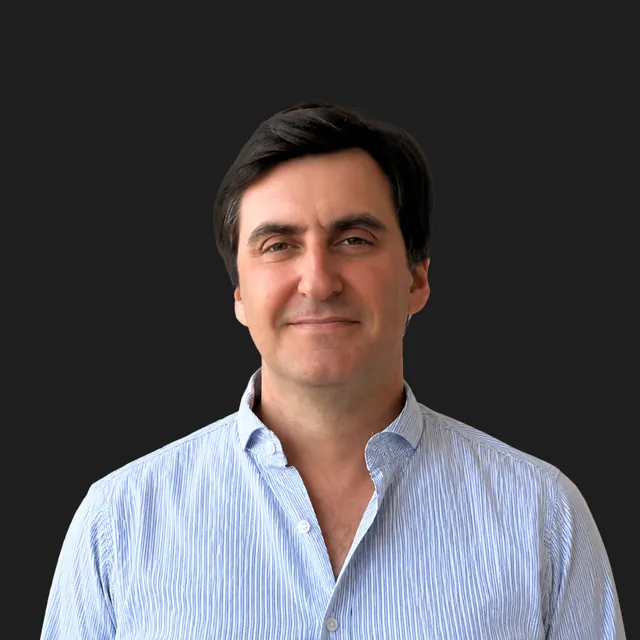
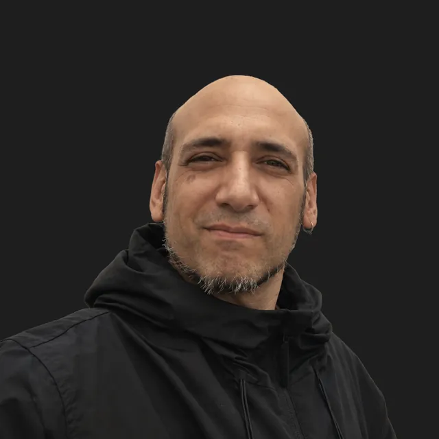
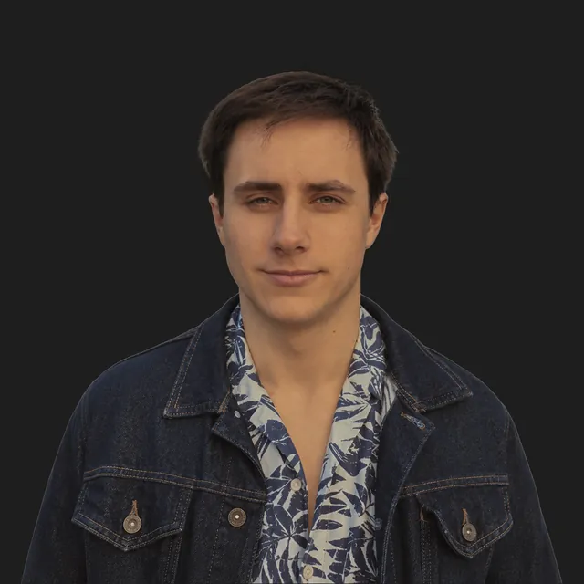
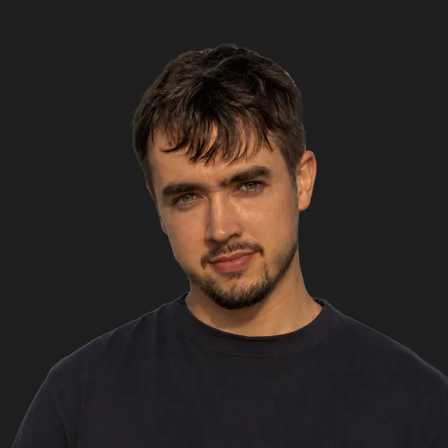
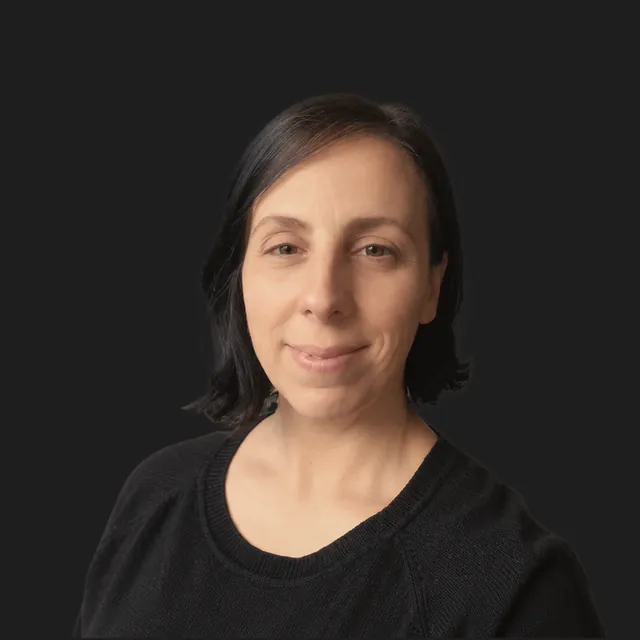
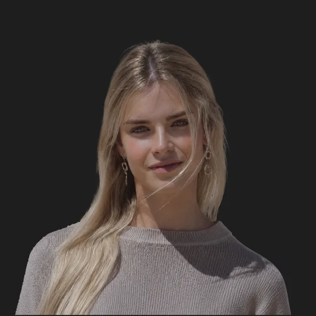
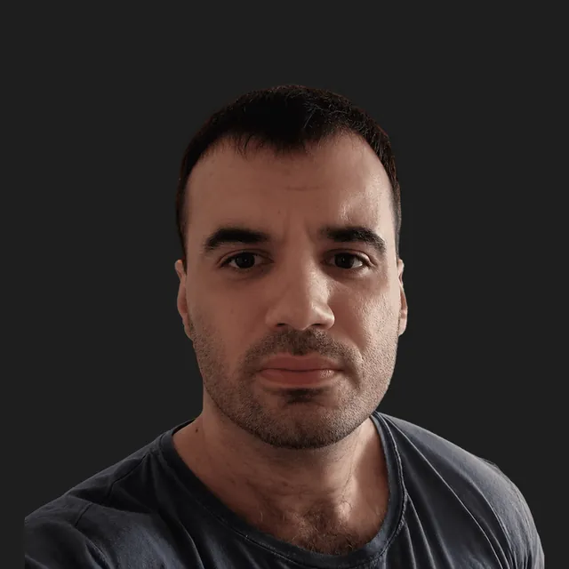
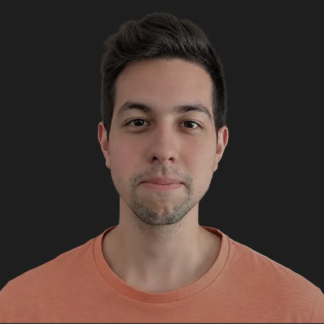

Ark
Structure physical reality.
- Ruler
- Length
00Thesis
Woza brings applied science, ontology, AI and engineering together into proprietary technologies so that knowledge becomes something we can build with.
An operational system.
01Technology
Ark
Orion
Zenith
Atlas
Technology, human judgment and a shared engineering discipline, working as one. To turn what science makes possible into what the world can build next.
Nothing starts from zero.
02Invention
Protocol
A shared structure for forest systems
Protocol
Crop cycles, yield and chain of custody, connected.
Model
Agricultural language model.
FUTURED paper.
03Our technology.
A grid that can prepare for the storm before it becomes an outage.
An entire power network modelled against its possible futures, asset by asset.
Applied intelligence strengthening the foundations of BIO certification.
An entire region’s forests become one living system: understood, queried and managed together.
The future of industrial land can be simulated before it is built.
A shared scientific foundation lets an agricultural platform develop new capabilities without starting again.
Crop health, climate and markets become one connected intelligence for agricultural decisions.
A city’s movement becomes a system that can be modelled and reshaped to reduce emissions.
Technology collaboration.
Planetary-scale computing meets the engineering of physical resilience.
Trusted by
Client logo
Client logo
Client logo
Client logo
Client logo
Client logo
Client logo
Client logo
Client logo
There is more than we can show.
Selected deployments remain under NDA. The public record is only part of the story.
04Ventures
Physical climate risk for energy infrastructure.
Agricultural intelligence.
Forest intelligence.
05Signals
06Team
The physical world’s next engineering discipline won’t emerge by accident. We’re building it.
The people who decided it









07Contact
Bilbao
BAT, Gran Vía 1, 48001 Bilbao.
Donostia
Parke Mikeletegi 53, 20009 Donostia.